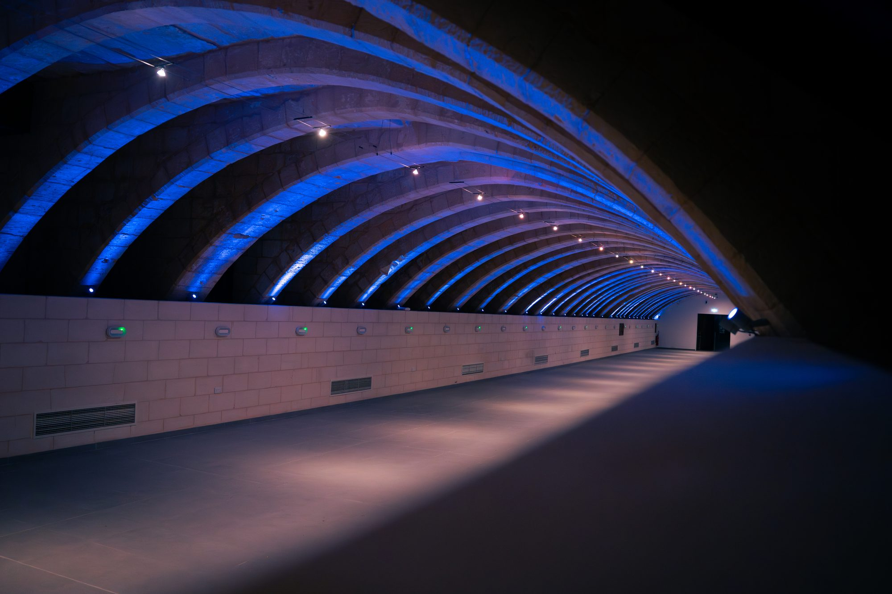
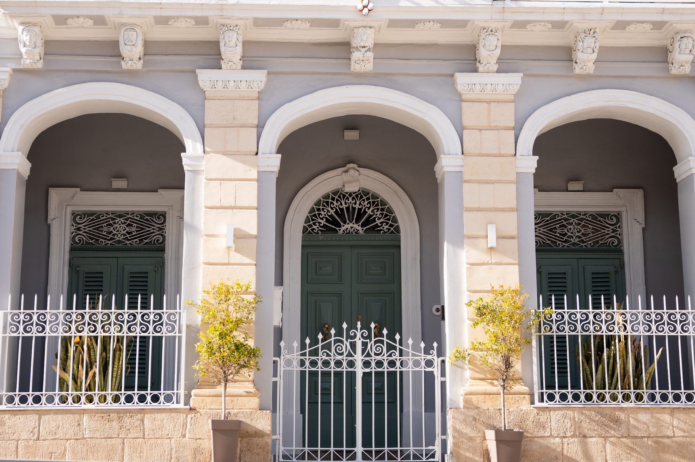
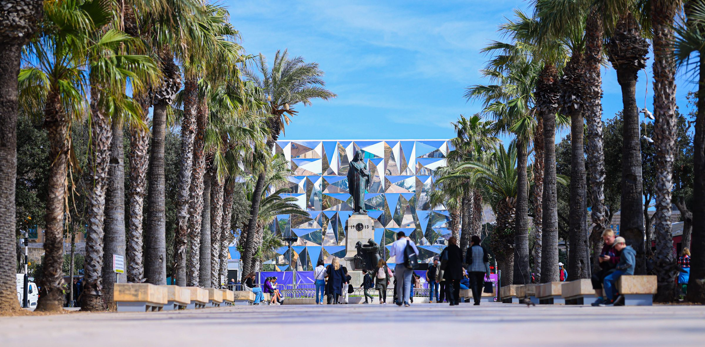

Founded in 2003, Perit Lewis is a well-established architectural practice with decades of experience across a diverse range of sectors, including residential, commercial, and educational facilities, public open spaces, civic centres, promenades and roads. The firm's expertise further encompasses the restoration and conservation of historic buildings and monuments, as well as the design and installation of contemporary structures for exhibitions and conferences.
Thoughtfully Designed. Beautifully Built.
Led by seasoned professionals and supported by a proactive team that embraces innovation and emerging techniques, Perit Lewis brings both extensive expertise and a forward-thinking approach to every project. With a strong track record across the public and private sectors, the practice has built a well-deserved reputation for professionalism, reliability, and effective project delivery.
The firm's dedication to quality is evidenced by its compliance with ISO 9001:2015, which upholds the highest standards across all areas of its operations. This certification reflects Perit Lewis's commitment to continual improvement through clearly defined quality objectives that benefit its clients and partners alike.

These values have earned Perit Lewis decades of trust and continue to inspire its innovative vision for the future.
This approach ensures that the firm's business goals remain firmly aligned with the quality principles that underpin its work. At Perit Lewis, quality is embedded in the practice's culture. The firm strives to build lasting relationships founded on trust, transparency, and mutual success, with clients central to everything Perit Lewis does, consistently aiming not merely to meet expectations but to exceed them.